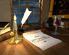

Welcome to THE BLOGGOSPHERE
 Image Image |
 Page Page |
|---|---|
 |
Resident Assistant Bulletins a resource of bulletin board pdfs/ideas for resident assistants! |
 |
My New Leaf Town welcome to pawpoint city! |
 |
Chrobin Fanfic Hall of Fame my (hopefully) helpful list of the greatest Chrom x Robin fanworks to date. Art by Hollyfig, used with permission!! |
 |
Films Available on YouTube a growing resource of movies/shows available for free on youtube |
|  | My Writing a collection of stories i have written, including fire emblem fanfiction! |
 |
Bisexuality a page on bisexuality: definition, symbols, experiences. |
| TERRIBLE THINGS i love bon. she's my best friend. she says some truly haunting things, sometimes. |
|
| Quizzes a page of quizzes i have made, which you can take directly on my site |
|
| Senior Quotes a collection of quotes i considered for my senior quote. feel free to use 'em! |
|
| Do Not Enter please! do NOT click on this page!! |